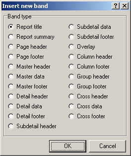
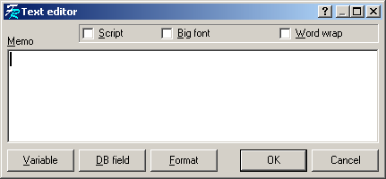
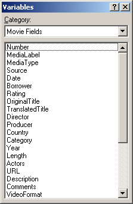
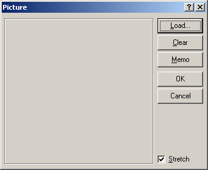

Création de rapports (modèles pour l'impression)
Pour lancer le Report Designer, cliquez sur le bouton "Ouvrir le Designer" dans la fenêtre d'impression. Vous pouvez aussi utiliser le raccourci qui a été ajouté dans le Menu Démarrer, ou encore lancer AMCReport.exe qui est situé dans le même dossier que Ant Movie Catalog.
Ce Designer est celui de FreeReport, et n'a presque pas été modifié (il est plutôt complexe, je vais donc probablement le laisser tel qu'il est actuellement).
Cette page montre les différentes étapes de la création d'un rapport.
Sélection de la taille de la page
Allez dans File -> Page Options pour sélectionner la taille du papier. En général ce sera A4 (ou Letter). Vous pouvez aussi sélectionner l'orientation Lanscape (Paysage) à la place de Portrait si vous voulez. Dans cette fenêtre vous pouvez également choisir le nombre de colonnes que vous désirez avoir sur votre page.
Bandes
Pour être reconnus, les champs doivent être placés sur des "Bands" (bandes). Pour mettre une bande sur la page, cliquez sur l'icône Band et ensuite cliquez sur la page, là où vous voulez placer la bande. Ensuite vous pouvez sélectionner quel type de bande il faut placer :

Certains types ne seront jamais utilisés ici. Ceux que vous allez probablement utiliser sont :
Sélectionnez "Master data" et cliquez "OK". Une autre fenêtre vous demandera de sélectionner la source, laissez le choix par défaut ("None") et cliquez "OK".
Zones de texte
Pour placer une zone de texte sur la bande Master data, sélectionnez l'icône Rectangle object et placez-le sur la bande (attention: ne le placez pas en-dehors de la bande, où il risque de ne pas apparaître sur le rapport final).
L'éditeur de texte est affiché :

Vous pouvez entrer le texte que vous voulez, puis cliquer "OK". Pour accéder à nouveau à cette fenêtre, double-cliquez sur une zone de texte.
Dans le menu contextuel (clic de droite) de ces objets, il y a trois options :
Variables (champs des films et autres)
Pour placer un champ de film, ajoutez une zone de texte (Rectangle object). Dans ses propriétés, spécifiez le nom du champ entre crochets [ ]. La liste des noms de champs est disponible via le bouton "Variables" de la fenêtre d'édition de texte :

Concernant les champs personnalisés, le nom du champ est définie par le tag du champ personnalisé, le tout entre crochets [ ].
Concernant les champs des extras, le nom du champ est définie par :
Les noms de champs peuvent eux-aussi être obtenus via des variables. Il suffit de mettre le préfixe "label:" devant le nom de la variable, le tout étant entre crochets. Cela permet de faire des rapports multilingues (qui s'adaptent à la langue dans laquelle le programme est utilisé).
Dans la liste déroulante vous pouvez sélectionner "Other" pour voir les champs spéciaux tels que le numéro de page, la date, etc...
Vous pouvez mélanger du texte normal et des variables dans une même zone de texte.
Images
Pour placer une image, utilisez l'icône Insert picture . La fenêtre d'image ressemble à ceci :

Si vous voulez que cette image affiche l'image du film courant, cliquez sur le bouton "Memo" et entrez "[Picture]" (ou sélectionnez-le dans la liste des variables).
Si vous voulez que cette image affiche l'image d'un extra du film courant, cliquez sur le bouton "Memo" et entrez "[EPicture#Tag]" ou "[EPicture##Pos#Category#Checked]" (ou sélectionnez-le dans la liste des variables) et replacez Tag, Pos, Category et Checked par les valeurs de l'extra désiré (ex: [EPicture#Trailer] ou [EPicture##1#Actors#True] ou [EPicture##1]). Utiliser le modèle d'impression "DVD + Extras" avec le catalogue "Sample_4.2.0.amc" pour voir un exemple.
Dans le menu contextuel de la zone d'image, il y a trois options :
Vous pouvez aussi dessiner des lignes, via l'icône Draw line .
Scripts
Dans la fenêtre d'édition du contenu des zones de texte et des images, une option "Script" peut être cochée. La partie inférieure de la fenêtre vous permet alors d'entrer un script. Les scripts utilisés ici n'ont rien à voir avec ceux utilisés par Ant Movie Catalog, mis à part que le langage utilisé est lui-aussi basé sur du Pascal. Voici quelques exemples :
Si vous désirez ne faire apparaître une image que pour les films d'action, placez le code suivant dans la partie "Script" du memo de l'image :
begin Visible := [Category] = 'Action'; end;
Si vous désirez placer l'année entre parenthèses derrière le titre seulement si elle est spécifiée pour le film (pour éviter de se retrouver avec des parenthèses vides), placez le code suivant dans la partie "Script" d'une zone de texte :
begin
if ([Year] <> '') then
tmp1 := [OriginalTitle] + ' (' + [Year] + ')'
else
tmp1 := [OriginalTitle]
end;
Placez ensuite dans la zone de texte le code [tmp1] pour utiliser le résultat du script comme
étant une nouvelle variable.
Voici la liste de quelques functions de base disponibles pour les scripts :
Length(<string>): Retourne la taille de la chaine de caractères.
Pos(<substring>, <string>): Retourne la première position de la sous-chaine dans la chaine (même que la fonction Delphi).
LastPos(<substring>, <string>): Retourne la dernière position de la sous-chaine dans la chaine.
Copy(<string>, <from>, <count>): Retourne une portion de la chaine (même que la fonction Delphi).
StringReplace(<s>, <old>, <new>): Remplace la chaine old par new dans la chaine s (sensible à la casse).
StringReplaceIgnoreCase(<s>, <old>, <new>): Même que StringReplace mais non sensitive à la casse.
RegExprSetSubstitute(<ExprStr>, <InputStr>, <TemplateStr>): Retourne la chaine TemplateStr avec '$&' ou '$0' remplacé par l'ensemble des occurrences de l'e.r. et '$n' remplacé par l'occurrence de la sous-expression #n.
RegExprSetReplace(<ExprStr>, <InputStr>, <ReplaceStr>): Retourne la chaine InputStr avec les occurrences de l'e.r. remplacées par la chaine ReplaceStr (avec substitution).
RegExprSetReplaceSimple(<ExprStr>, <InputStr>, <ReplaceStr>): Retourne la chaine InputStr avec les occurrences de l'e.r. remplacées par la chaine ReplaceStr (sans substitution).
UpperCase(<string>): Convertit toutes les lettres de la chaîne en majuscule.
LowerCase(<string>): Convertit toutes les lettres de la chaîne en minuscule.
NameCase(<string>): Convertit toutes les lettres de la chaîne en minuscule à part la première lettre en majuscule.
Str(<value>): Convertit un nombre vers une chaine de caractères.
FormatFloat(<formatstr>, <value>): Convertit une valeur numérique vers une chaine, en utilisant le masque formatstr (même format qu'en Delphi).
FormatDateTime(<formatstr>, <value>): Convertit une date/heure vers une chaine, en utilisant le masque formatstr (même format qu'en Delphi).
StrToDate(<string>): Convertit une chaine vers une date.
StrToTime(<string>): Convertit une chaine vers une heure.
Int(<value>): Retourne la partie entière d'un nombre.
Frac(<value>): Retourne la partie fractionnaire d'un nombre.
Round(<value>): Retourne la valeur arrondie d'un nombre.
value1 Mod value2: Retourne le reste de la division value1 / value2.
DATE: Retourne la date courante.
TIME: Retourne l'heure courante.
PAGE#: Retourne le numéro de la page courante du rapport généré.
TOTALPAGES: Retourne le nombre total de pages du rapport généré. Pour utiliser cette fonction, le rapport doit avoir l'option "Two pass report" d'activée.
RECORD#: Retourne le numéro de l'enregistrement courant du rapport généré.
TOTALRECORDS: Retourne le nombre total d'enregistrements du rapport généré. Pour utiliser cette fonction, le rapport doit avoir l'option "Two pass report" d'activée.
TEMPLATEPAGE#: Retourne le numéro de la page modèle courante du rapport généré.
TOTALTEMPLATEPAGES: Retourne le nombre total de pages modèles du rapport généré.
CURRENT#: Retourne le numéro de l'enregistrement courant dans la page modèle courante du rapport généré.
TOTALRECORDSTEMPLATEPAGE: Retourne le nombre total d'enregistrements dans la page modèle courante du rapport généré. Pour utiliser cette fonction, le rapport doit avoir l'option "Two pass report" d'activée.
Beaucoup de fonctions du Report Designer ne sont pas utilisées ici, comme par exemple les champs DB, l'aperçu avant impression (Print Preview), les Subreports, ... (pour l'aperçu avant impression, sauvez le modèle et cliquez ensuite sur "Rafraîchir" dans la fenêtre d'impression de Ant Movie Catalog, une fois que le bon modèle est choisi dans la liste bien sûr).
Si vous avez des problèmes avec des champs de films, assurez-vous qu'ils sont placés sur une bande "Master data". Si des champs tels que "Total pages" ne fonctionnent pas, assurez-vous que l'option "Two pass report" est activée dans File -> Report Options.